ООП в Dart 3
- Каждый объект имеет класс; все классы, кроме Null, наследуются от Object.
- У класса один superclass, а поведение дополнительно переиспользуется через mixins.
- final-поля помогают строить неизменяемые модели.
- abstract interface class явно задаёт контракт без реализации для потребителя.
Class
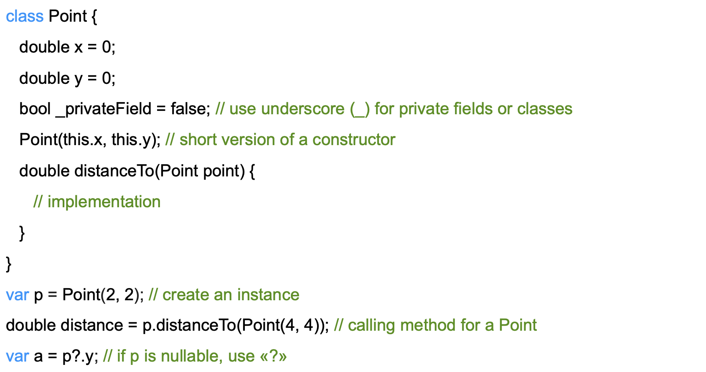
Проверка и приведение типа
- is проверяет тип и позволяет анализатору уточнить тип переменной.
- is! проверяет, что объект не относится к типу.
- as выполняет приведение; при несовместимом типе возникает runtime-ошибка.
- Сначала предпочитайте is и pattern matching; as используйте, когда контракт типа уже известен.
Поля, getters и setters
- Каждое поле имеет неявный getter.
- Изменяемое поле имеет неявный setter; final-поле setter не получает.
- Явный getter вычисляет значение без отдельного хранимого поля.
- Явный setter полезен для контролируемого изменения, но неизменяемую модель проще строить на final-полях.
Callable-класс в Dart
В Dart класс может быть "вызываемым" (callable), если в нем реализован метод call(). Это позволяет экземпляру класса вести себя как функция, которую можно напрямую вызывать с аргументами.
Callable-классы полезны для создания объектов, которые инкапсулируют логику, но при этом могут быть использованы в функциональном стиле, например, в качестве обратных вызовов или для DSL (Domain-Specific Languages).
class Multiplier {
final int factor;
Multiplier(this.factor);
int call(int number) {
return number * factor;
}
}
void main() {
var multiplyByTwo = Multiplier(2);
print(multiplyByTwo(5)); // Выводит 10
}Базовые свойства объекта · 1/2
Возвращает строковое представление объекта, полезно для отладки.
Целочисленное значение, представляющее хеш-код объекта, используется в коллекциях, таких как Set и Map.
Определяет, равны ли два объекта. По умолчанию сравнивает ссылки, но может быть переопределен.
Предоставляет тип объекта во время выполнения программы, позволяет динамически проверять тип.
Вызывается, если вы пытаетесь получить доступ к несуществующему методу или свойству объекта.
- toString()
- hashCode
Базовые свойства объекта · 2/2
- == (оператор)
- runtimeType
- noSuchMethod()
Class modifiers в Dart 3
- interface class: снаружи библиотеки можно implement, но нельзя extend.
- base class: можно extend, но нельзя implement; ограничение наследуется подтипами.
- final class: снаружи библиотеки нельзя ни extend, ни implement.
- sealed class: закрытое семейство прямых подтипов и исчерпывающий switch; сам класс не создаётся напрямую.
- mixin class: явно разрешает использовать объявление и как класс, и как mixin.
Sealed-class – Union-тип
Sealed-классы позволяют создавать ограниченные и предсказуемые иерархии типов, что особенно удобно для моделирования состояний и событий в приложениях.
Это обеспечивает строгую проверку на этапе компиляции и повышает надежность кода, уменьшая вероятность ошибок во время выполнения.
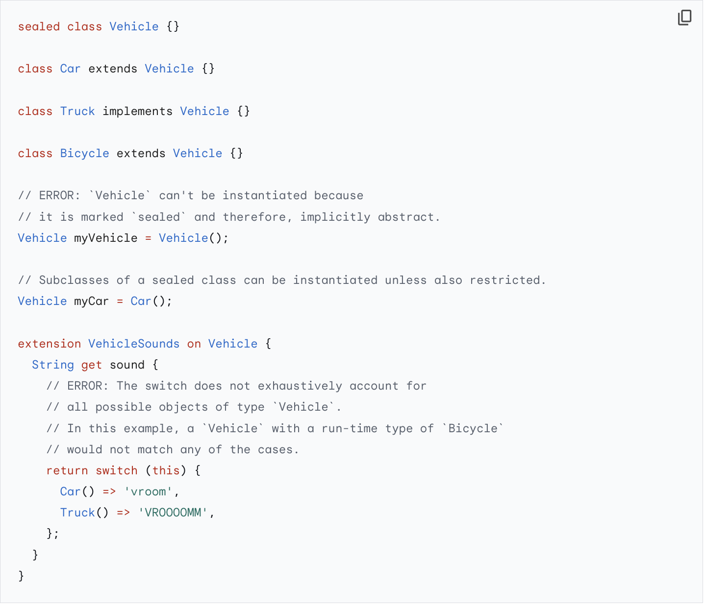
Конструкторы /1
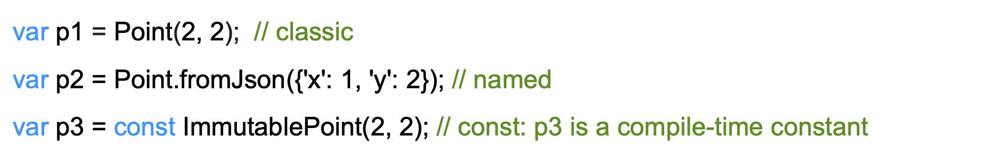
Несколько способов создать объект
- Dart не поддерживает перегрузку методов и конструкторов по разным сигнатурам.
- Named constructor даёт классу несколько явно названных способов создания объекта.
- factory constructor может вернуть закэшированный объект или экземпляр подтипа и не обязан создавать новый объект.
- Методы подкласса можно переопределять с @override — это не перегрузка.
Наследование /1
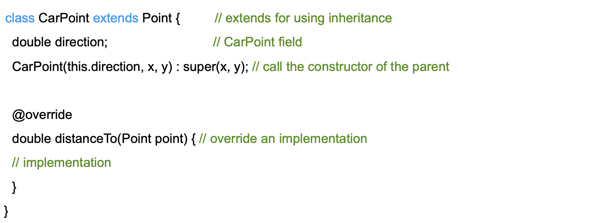
Наследование /2
Используется ключевое слово extends
Множественное наследование запрещено
Подкласс наследует поведение суперкласса;
Подкласс может переопределить поведение суперкласса; используется аннотация @override
Если у суперкласса есть конструктор, подкласс должен иметь конструктор, который вызывает конструктор родителя;
Для доступа к суперклассу используется ключевое слово super;
Абстрактные классы
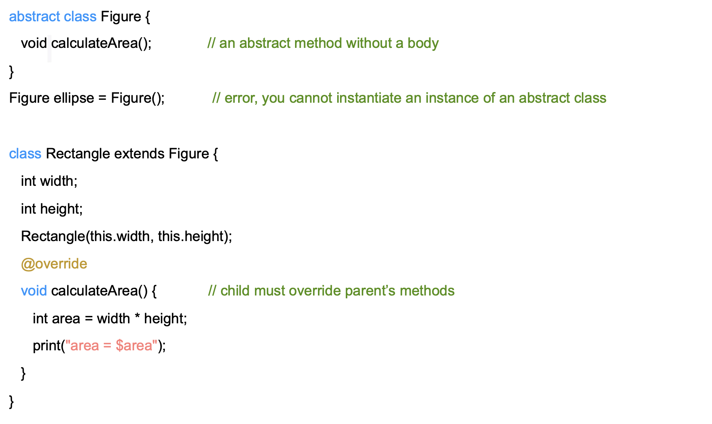
Интерфейсы в Dart 3
- Каждый класс по-прежнему неявно задаёт интерфейс своих instance members.
- implements требует самостоятельно реализовать контракт и не наследует реализацию.
- abstract interface class явно сообщает: тип предназначен как контракт и не создаётся напрямую.
- Один класс может реализовать несколько интерфейсов.
Интерфейсы /2
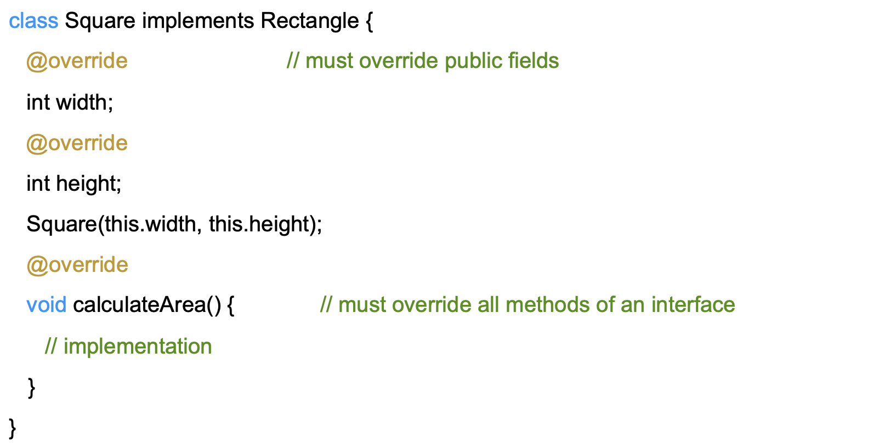
Static-переменные и методы
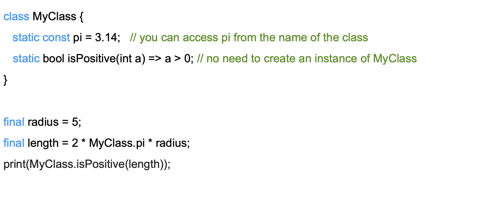
Enum
B Dart есть знакомые многим enum-типы, объявить простейший enum можно так:
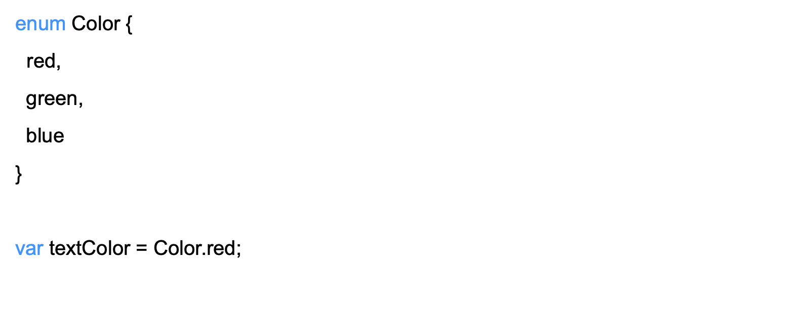
Generic /1
Помогают избегать дублирования кода
Помогают сохранять безопасность типов
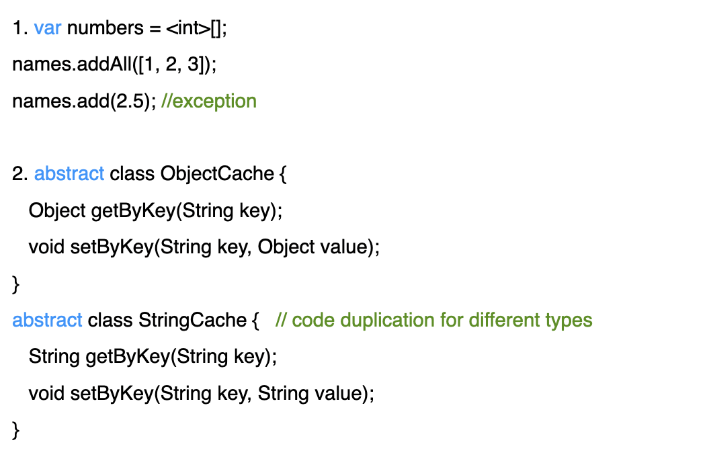
Generic /2
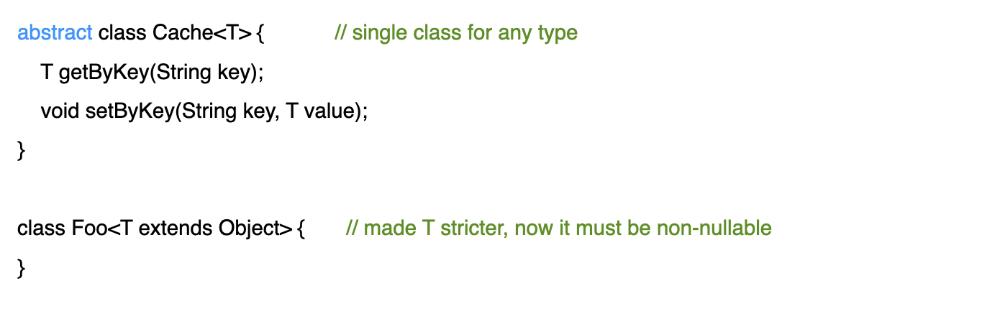
Generic /3
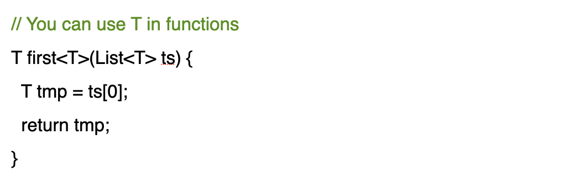
Extension
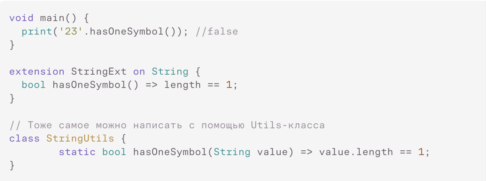
Mixins в Dart 3
- mixin переиспользует реализацию в нескольких иерархиях; подключается через with.
- Обычный class в Dart 3 нельзя использовать как mixin без явного mixin class.
- mixin и mixin class не объявляют generative constructors.
- Ограничение on задаёт тип, функциональность которого mixin ожидает от класса.
Mixins /2
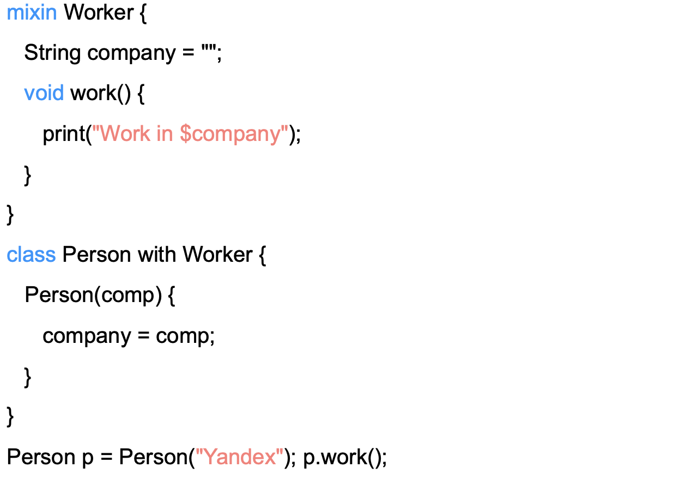
Задание
Практика: синхронизация каталога
- 70 минут: четыре последовательных TODO и восемь тестов.
- Product: const, nullable category, == и hashCode с глубоким сравнением tags.
- Два List сравниваются по содержимому; Map индексирует товары; Set хранит изменившиеся id.
- Повторяющийся id даёт понятный лог и FormatException.
- Records и patterns — мегаопционально и не нужны для 2 баллов.